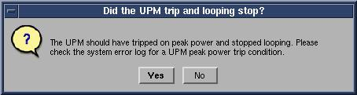
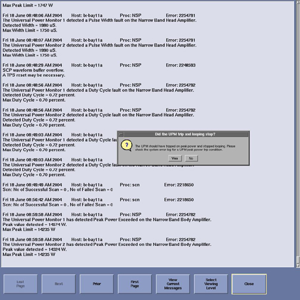
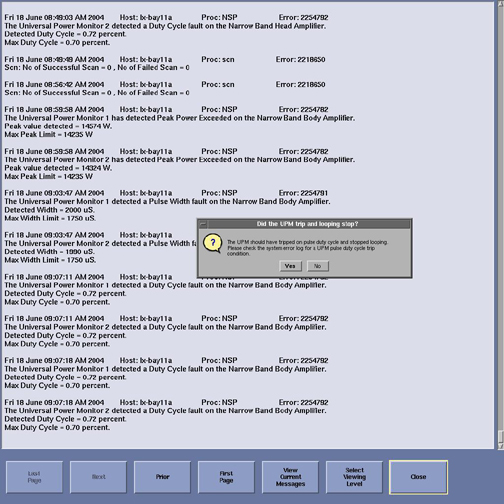
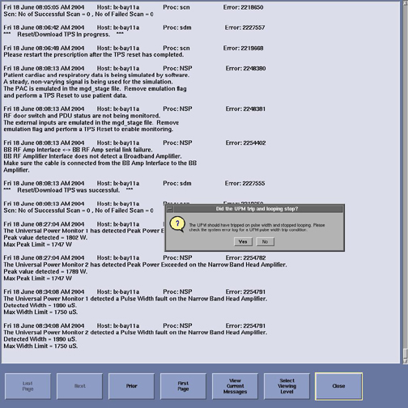
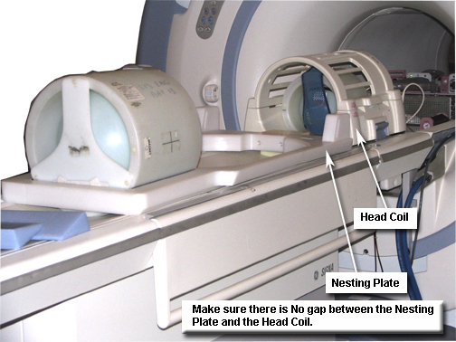

Operating Documentation
Direction 5440001-3, Rev# 6
Signa HDxt Service Methods
Module Version 5.0, Version Date 11/17/08
Operating Documentation |
| Required Persons | Preliminary Reqs | Procedure | Finalization |
|---|---|---|---|
| 1 | Not Applicable | 15 mins | 5 mins |
The Universal Power Monitor (UPM) functional checks for 1.5T consist of three automated tests:
Peak Power
Pulse Width
Duty Cycle
All three automated tests must pass to ensure the correct operation of the UPM system. Run both Head and Body UPM Functional Checks for the proper system type.
(For 1.5T) 1.5T Body UPM Functional Check.
(For 1.5T) 1.5T Head UPM Functional Check.
| Item | Qty | Effectivity | Part# | Manufacturer | |
|---|---|---|---|---|---|
| Power Measurement Kit (Use Dummy Load listed below if using G1 Power Measurement Kit.) | 1 | - | 46-317724G1 or G2 | - | |
| 25 kW, 30 dB Attenuator (Dummy Load) - Use only with G1 Power Measurement Kit. | 1 | - | 46-317724P14 | - | |
| 50 ohm, 200 watt, 30 dB Attenuator (Dummy Load) - Use only if needed for the G1 Power Measurement Kit. | 1 | 1.5T | 46-317724P14 | - | |
| RF Test Cables Kit - Use only with the G1 Power Measurement Kit. | 1 | 1.5T | 46-255816G1 | - | |
| ||||
| FATAL ELECTRIC SHOCK! | ||||
| HAZARDOUS VOLTAGES PRESENT THROUGHOUT THE RF CABINET WHEN ENERGIZED. | ||||
| DISABLE RF AMPLIFIER WHEN CONFIGURING THE CALIBRATION TOOLS. |
| Condition | Reference | Effectivity |
|---|---|---|
Properly calibrated RF Head, Body and MNS. | - | - |
To inhibit TR faults, disable the Driver Module TR fault detection in the RFS (RF in the System Cabinet) shown in Illustration 1. Move Switch 2 to the TR Disable position.
Illustration 1: Driver Module Front Switches

Remove the Body Heliax Cable from J4, and connect the RF Dummy Load into J4.
| NOTE: | If the RF Max Power Out procedure was just completed, the configuration is the same. Leave the Head RF Heliax Cable disconnected, and the body output can keep the coupler (1.5T) and wattmeter (3.0T) in line. It will not change the outcome of the calibration. |
Illustration 2: Plug Dummy Load into J4, Body Out

This tool must recognize a landmark. It is not necessary to have a Body Phantom in place or any scan parameter entered other than what is described below. Simply landmark on the cradle where the Body Phantom would be located.
Move the cradle into the bore.
Press [Align on].
Move the cradle to place the laser alignment light on the approximate location of where the body phantom would be located.
Press [Landmark].
Press [Advance to Scan].
From the Common Service Desktop:
For the Class M service tool, select Calibration Wizard from the calibration menu, and [Click here to start this tool]. Once the Calibration Wizard starts, select UPM Calibration (Head and Body) from the menu, review and okay the pre & post-dependencies, and select [Click here to start this tool]. (May also start the tool under Class A/C mode shown next.)
Select the Calibration Tab.
Select UPM Tool from the Calibration menu, and [Click here to start this tool]. (Illustration 3 shows an example of the UPM tool.)
Illustration 3: UPM Main Screen

Select the Nuclei: 1H.
Select the RF Chain to check: Body.
Click the [Func Chk] button.
| NOTE: | Power Type selection (not used) will be grayed out; this is normal. |
Click the[Start] button. When the message shown in Illustration 4 displays, click [Yes] if the Body Coil is ready to go.
Illustration 4: Body Coil Setup Confirmation

The UPM tool now takes full control, and runs the three functional tests for the setup currently active.
The result of each test is compared against a Specification File on the system, and the UPM status should indicate Pass/Fail.
During the tests, the user will be prompted three times as each test completes. Look in the error log to confirm that the tests completed successfully. The following illustrations are examples of pop-ups and error logs that should display.
Illustration 5: Body Peak UPM Trip Question

Illustration 6: Error Log Example Showing Body Peak Trip

Illustration 7: Body Pulse Width Trip Question

Illustration 8: Error Log Example Showing Body Pulse Width Trip

Illustration 9: Body Pulse Duty Cycle Trip Question

Illustration 10: Error Log Example Showing Body Pulse Duty Cycle Trip

Illustration 11: Pass Message

| NOTE: | A TPS Reset must be performed when testing is complete before scanning can resume. |
To proceed:
If any of the tests fails, refer to Troubleshooting UPM.
If all three tests pass, proceed to 1.5T Head UPM Functional Checkfor 1.5T.
To inhibit TR faults, disable the Driver Module TR fault detection in the RFS (RF in the System Cabinet) shown in Illustration 12. Move Switch 2 to the TR Disable position.
Illustration 12: Driver Module Front Switches
Remove the Head Heliax Cable from J3 at the back of the RF Amplifier, and connect it directly to the RF Dummy Load. (See Illustration 13.)
| NOTE: | If the RF Max Power Out procedure was just completed, configuration is the same. Leave the Body RF Heliax Cable disconnected, and the head output can keep the coupler (1.5T) and wattmeter (3.0T) in line. It will not change the outcome of the calibration. |
Illustration 13: Setup for Head Output Measurement

| NOTE: | It isnecessary to have a Head Coil in place. It is not necessary to have any scan parameter entered other than what is described below. Simply landmark on the cradle where the Head Coil is located. |
Press the [Align on] button.
Move the cradle into the bore.
Press the [Landmark] button when the align light is approximately at the center of the Head Coil.
Press the [Advance to Scan] button.
Select the Nuclei: 1H.
Select the RF Chain to check: Head
Select the [Func Chk] button.
Click the [Start] button. When the message shown in Illustration 14 displays, click [Yes] if the Head Coil is ready to go.
Illustration 14: Head Coil Setup Confirmation

The UPM tool takes full control and runs the three functional tests, and the UPM status should indicate Pass/Fail.
During the tests, the user will be prompted three times as each test completes. Look in the error log to confirm that the tests completed successfully.
The following illustrations are examples of pop-ups and error logs that should display.
Illustration 15: UPM Looping Trips

Illustration 16: Looping Trip Error Log Example

Illustration 17: UPM Duty Cycle Loop Trip
Illustration 18: Duty Cycle Loop Trip Log Example

Illustration 19: UPM Head Pass Message

To proceed:
If all three tests pass, select [Quit ] from the UPM Main screen shown in Illustration 19.
If any of the tests fails, refer to Troubleshooting UPM.
For troubleshooting purposes, the UPM Functional Check tool can be run using the system load setup shown in Illustration 20. Note that a “PASS” result does not provide the required verification of UPM functionality, nor does a “FAIL” result indicate that the UPM or any other part of the transmit chain is faulty or out of specification using this setup.
| NOTE: | The UPM Functional Checks must pass with the prescribed dummy setups in 1.5T Body UPM Functional Check Setup and 1.5T Head UPM Functional Check Setup as part of the system verification. However, running the Functional Check tool with the system load can be useful when trying to isolate an issue to a particular part of the chain. For this purpose, the supplemental check procedure is defined. |
Place the Head Coil on the cradle.
Insert the Head Sphere and Loader into the head coil as shown in Illustration 20.
Illustration 20: SPT Nesting Plate Setup

Place the SPT Nesting Plate on the cradle, as tight against the head coil as possible.
Place the Body Sphere and Loader on the nesting plate as shown in Illustration 20.
Press the [Align on] button.
Move the cradle to place the laser alignment light on the center of the Body Loader and Phantom if doing Body Functional Checks, or on the Head Coil Phantom if doing Head Functional Checks.
Proceed to Setting Up Software Tool to Calibrate UPM - Body Forward Power, Step 2 for Body Functional Check; proceed to Setting up Software Tool to Calibrate UPM – Head Forward Power, Step 3 for Head Functional Check.
Solution 1:
Check all cabling to the UPM components to make sure they are properly installed.
Repeat the UPM Functional Test for the receive chain that failed (Head or Body).
Solution 2:
Cycle power to the UPM Chassis.
Reset TPS.
Repeat the UPM Functional Test for the receive chain that failed (Head or Body).
Solution 3: Reboot the system.
Solution 4:
Remove power from the UPM.
Reset the Processor Module.
Restore power to the UPM.
Reset TPS.
Repeat the UPM Functional Test for the receive chain that failed (Head or Body).
Solution 5:
Remove power from the UPM.
Reset the Detector Boards.
Restore power to the UPM.
Reset TPS.
Repeat the UPM Functional Test for the receive chain that failed (Head or Body).
Solution 6:
Check the Processor Module. (Problem could be that it is bad.)
Remove power from the UPM.
Replace the Processor Module.
Restore power to the UPM.
Reset TPS.
Repeat the UPM Functional Test for the receive chain that failed (Head or Body).
Solution 7:
Check the Detector Boards. (Problem could be that one is bad.)
Remove power from the UPM
Replace both Detector Boards.
Restore power to the UPM.
Reset TPS.
Repeat the UPM Functional Test for the receive chain that failed (Head or Body).
For additional troubleshooting information, refer to Universal Power Monitor (UPM) Troubleshooting.
The Universal Power Monitor calibration parameters found in the UPM calibration file (/export/home/signa/tools/upm.config) are used in the Calibration/Functional Check program. The Program code sets the Digital Attenuators in the UPM based on the results of the tests run and a comparison to these UPM Calibration parameters.
The UPM calibration file is accessible within the UPM Calibration tool from the “File” pull-down menu, “Edit Config” option. These values can be edited and saved during troubleshooting to perhaps understand where the power monitor is tripping. Before changing any parameter, make sure to select and run the Bkup UPM Cal option first to allow a return to the default values at any time.
A screen shot of the UPM Calibration file (shown in Illustration 21) contains the default configuration values for all of the UPM parameters. This illustration is for reference only, as the content and values will be different based on the system type and calibration results. (Use the [Restore Defaults] on the Config File Editor GUI to get back to known default values.) The final UPM Digital Attenuator values are written to the UPM Calibration Configuration files (Upm1Cal.cfg, Upm1Cal.cfg, etc.) located in directory: w/config.
Note that the format of the Upm1Cal.cfg and Upm2Cal.cfg examples is as follows:
85←Head FORWARD Power, attenuator setting in HEX
9f←Head REFLECTED Power, attenuator setting in HEX
0← Head Quad Hybrid Reflected Power, attenuator setting in HEX (currently not used)
8d← Body FORWARD Power, attenuator setting in HEX
8e←Body REFLECTED Power, attenuator setting in HEX
9d←Body Quad Hybrid Reflected Power, attenuator setting in HEX
93←MNS FORWARD Power, attenuator setting in HEX
83←MNS REFLECTED Power, attenuator setting in HEX
0 ← MNS Quad Hybrid Reflected Power, attenuator setting in HEX (currently not used)
0 ←CW FORWARD Power, attenuator setting in HEX (currently not used)
0←CW REFLECTED Power, attenuator setting in HEX (currently not used)
0←CW Quad Hybrid Reflected Power, attenuator setting in HEX (currently not used)
Any changes to these values are temporary, and can be quickly restored by selecting the [Restore Defaults] button shown in Illustration 21.
Illustration 21: UPM Config Editor

Remove the cables and measurement equipment.
Reattach Head and Body Heliax Cable.
Re-enable TR Driver fault detection.
Complete a TPS reset and do a test scan.
Any failure will require a recalibration of the UPM system. Refer to: